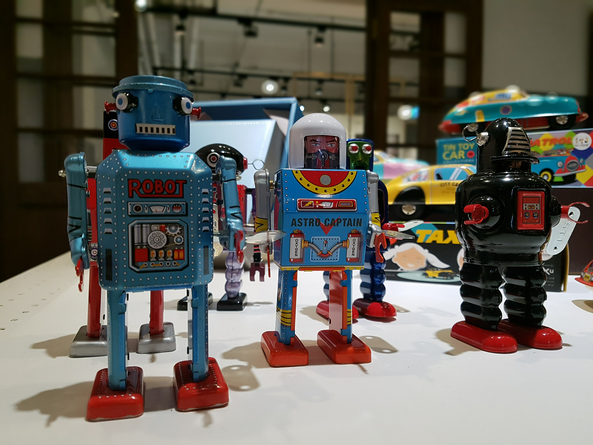

Beingsiin
빙신이라고 부르고 싶겠지만,

내 아이디의 정확한 의미는 빙-시인(being-siin)이다. 물론 처음 보는 대부분의 사람들이 빙-신(being-sin)으로 읽고 쓰지만 이것이 그들의 잘못이 아니라는 것을 나는 알고 있다. 나는 이 아이디를 GMAIL 주소로도 사용하는데 몇 번을 설명해도 아이(i)를 하나 빼먹고 메일을 보내는 경우가 종종 발생한다. 물론 한번도 나에게 도착한 적이 없는 메일이기 때문에 내가 직접 확인한 적은 없다. 그래서 자주 쓰는 계정을 하나 더 만들어야 했다.
사전에서 'being'라는 단어를 찾아보면 그 의미가 매우 크고 거대하다. 어떤 철학적 개념을 떠올리는 사람도 있겠지만 사실 나는 그 정확한 의미를 구분하지 못할뿐더러 그럴만한 능력도 없다. 1) 존재, 실재, 현존 2) 본질, 본성, 천성 3) 존재하는 것 4) 절대 존재, 본질 5) 됨, 되기 등 모두 내가 감당하기 어려운 말이다.
한편 'siin'은 시인(poet)을 소리나는 대로 표기한 것이다. 시는 내가 살아오면서 가장 오랜 시간 몰두한 대상이다. 물론 몰두하는 것과 시를 쓰는 것은 다른 일이다. 내가 누군가를 사랑하는 마음만으로 사랑이 완성되지 않는다. 사랑의 고백에 대한 응답이 있어야 사랑의 구조는 완성된다. 때문에 시를 사랑하는 것과 시를 쓰는 일은 엄연히 차이가 있다. 누구나 시인이 될 수는 있지만 시를 쓰고 있는 순간에만 시인이 될 수 있다고 믿기 때문이다.
물론 beingsiin이라는 아이디를 작명할 당시에는 어떤 거창한 의미를 부여했던 것은 아니다. 그 무렵 나는 “존 말코비치 되기(Being John Malkovich)”라는 영화를 보았던 것 같다. 15분 동안 존 말코비치가 되었던 인형극 조종사의 이야기로 기억한다. 워낙 오래 전의 영화여서 영화에 대한 감동이 지금까지 남아 있지는 않지만, ‘존 말코비치 되기’라는 제목에서 'Being'을 빌려왔을 뿐이다. 나는 그렇게 잠시 동안만이라도 시인이 되고 싶었는지 모른다.